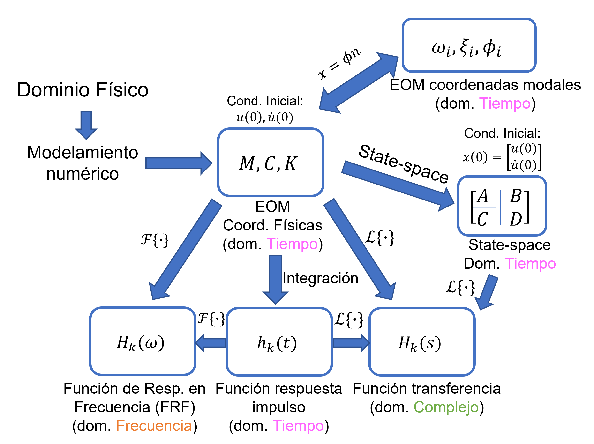
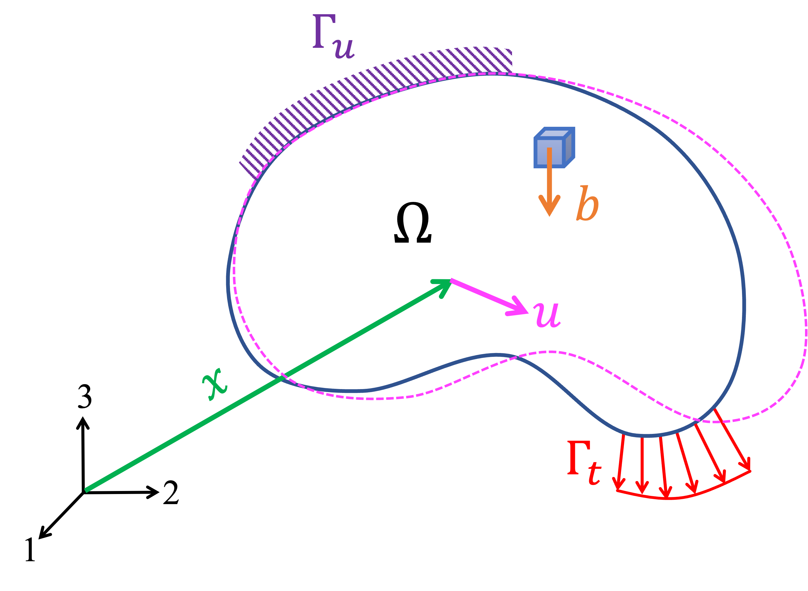
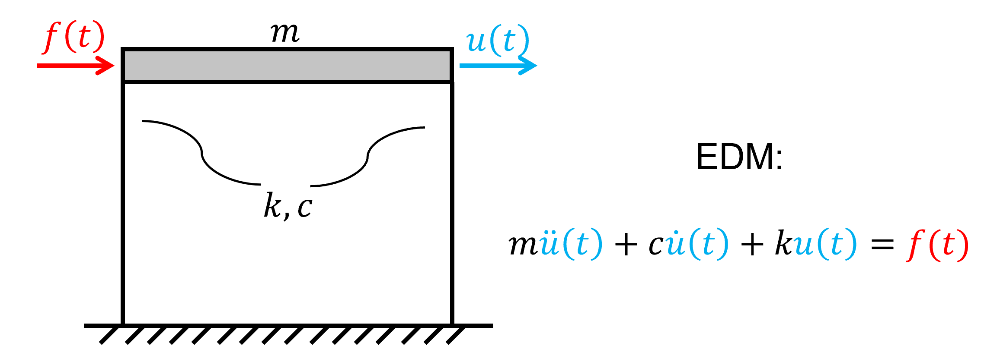
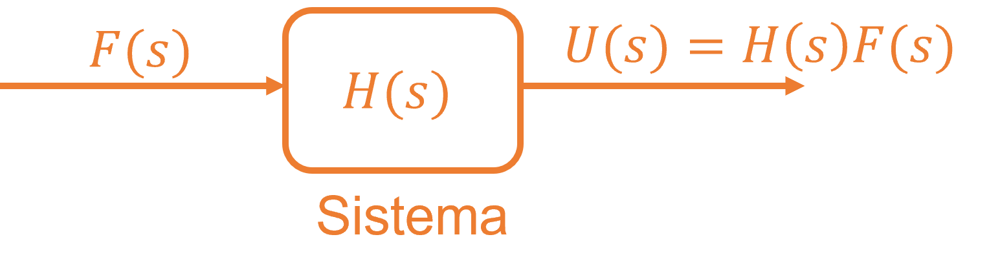
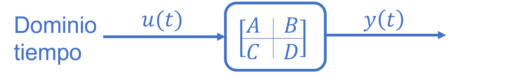

Existen diversas formas de modelar un sistema dinámico en el rango lineal.

Dominio \(\Omega \) tiene una frontera \(\partial \Omega = \Gamma _u \cup \Gamma _t\), donde \(\Gamma _u\) es la frontera con desplazamientos prescritos, y \(\Gamma _t\) es la frontera con tracciones prescritas.

La ecuación de equilibrio en forma fuerte, que describe el equilibrio dinámico en un continuo elástico, donde:
\begin {align} \sigma _{ij,j} + b_i = \rho \frac {\partial ^2 u_i}{\partial t^2}, & \qquad \forall \Omega \\ u_i = q_i, & \qquad \forall \Gamma _u\\ \sigma _{ij} n_j = t_i, & \qquad \forall \Gamma _t\\ u_i(x,0) = u_{0i}(x), & \qquad \forall \Omega \\ \frac {\partial u_i}{\partial t}(x,0) =\frac {\partial u_{0i}}{\partial t}(x), & \qquad \forall \Omega \\ \end {align}
donde: \(\sigma _{ij,j}\) es la divergencia del tensor de esfuerzos (\(\sigma _{ij}\)); \(b_i\) son las fuerzas volumétricas; \(\rho \frac {\partial ^2 u_i}{\partial t^2}\) es el término inercial, con \(\rho \) la densidad y \(u_i\) el desplazamiento.
Lagrangiano: \(\mathcal {L} = T-V\)
Acción: \(S = \int _{t_1}^{t_2} \mathcal {L}dt\)
Principio de mínima acción:
\begin {equation} \delta S = 0 \end {equation}
Utilizando calculo variacional se obtiene la forma débil del problema de elastodinámica, utilizando notación directa (Hughes, 2000):
\begin {equation} (w,\rho \ddot {u}) + a(w,u) = (w,b) + (w,t)_\Gamma \end {equation}
Forma matricial obtenida después de la etapa de semidiscretización espacial (tiempo contínuo). El sistema dinámico se escribe finalmente como un sistema de ecuaciones diferenciales ordinarias (ODEs).
\begin {equation} M \ddot {u} + C \dot {u} + K u = F(t) \end {equation}
donde \(u = \{u_1,u_2, \ldots ,u_n\}^T\) son los grados de libertad del sistema.
Considere la EDM de un sistema de 1GDL:
\[m \ddot {u} + c \dot {u} + k u = p(t)\]

Problema: Dada la EDM de un sistema estructural 1GDL, determinar su función de transferencia
\(H(s)\)
Notación:
\begin {align*} U(s) &= \mathcal {L}\{u(t)\}~: \text {respuesta (dominio complejo)}\\ F(s) &= \mathcal {L}\{f(t)\} ~: \text {input (dominio complejo)} \end {align*}
Asumiendo reposo: \(u(0)=\dot {u}(0)=0\)
\begin {align*} m\ddot {u}+c\dot {u}+ku &= f(t) ~/\color {red}{\mathcal {L}\{\cdot \}}\\ m\mathcal {L}\{\ddot {u}\}+c\mathcal {L}\{\dot {u}\}+k\mathcal {L}\{u\} &= \mathcal {L}\{f\}\\ ms^2U(s)+csU(s)+kU(s) &= F(s)\\ (ms^2+cs+k)U(s) &= F(s) \end {align*}
\begin {align*} \Longrightarrow H(s) = \frac {U(s)}{F(s)}&=\frac {1}{ms^2+cs+k} ~\text {: TF del sistema de 1GDL} \end {align*}
Aparte: Dada la entrada \(F(s)\) y la TF \(H(s)\), la salida es \(U(s) = H(s)F(s)\)

Ahora considere la EDM de un sistema MGDL:
\begin {equation} M \ddot {u}(t )+ C \dot {u}(t) + K u(t) = F(t) \end {equation}
Donde: \(u(t) \in \mathbb {R}^{n \times 1}\), es el vector de grados de libertad; \(M \in \mathbb {R}^{n \times n}\), \(C \in \mathbb {R}^{n \times n}\), y \(K \in \mathbb {R}^{n \times n}\) son las matrices de masas, amortiguamiento y rigidez,
respectivamente; \(F(t) \in \mathbb {R}^{n \times 1}\) es el vector de fuerzas externas.
Notación:
\begin {align*} \mathcal {L}\{u(t)\} &= U(s)\\ \mathcal {L}\{\dot {u}(t)\} &= s U(s) - u(0)\\ \mathcal {L}\{\ddot {u}(t)\} &= s^2 U(s) - s u(0) - \dot {u}(0)\\ \mathcal {L}\{f(t)\} &= F(s) \end {align*}
Entonces, la función de transferencia (transfer function, TF) del sistema dinámico se obtiene aplicando la transformada de Laplace sobre la EDM, asumiendo condiciones iniciales de reposo (\(u(0)= 0 \wedge \dot {u}(0)=0\)):
\begin {align*} M \ddot {u}(t) + C \dot {u}(t) + K u(t) &= F(t) ~/\mathcal {L}\{\cdot \}\\ \Longrightarrow \left [s^2M+sC+K \right ]U(s)&= F(s) \\ \Longrightarrow U(s)&= \underbrace {\left [s^2M+sC+K \right ]^{-1}}_{H(s)} F(s) \end {align*}
\begin {align*} {F}(s) &= \mathcal {L}\{{f}(t)\} ~: \text {input en dominio complejo (excitación)}\\ {U}(s) &= \mathcal {L}\{{u}(t)\}~: \text {output en dominio complejo (respuesta)}\\ {H}(s) &= \left [s^2M + s{C}+{K} \right ]^{-1} ~:\text {TF para un sistema MGDL} \end {align*}
Notar que para encontrar los polos se debe resolver las raíces polinomio: \begin {align*} s^2{M}+s{C}+{K} = {0} ~/ \text {$\cdot {\phi }$ yasumiendo ${C}={0}$} \\ \Longrightarrow (s^2{M}+{K}){\phi } = {0} ~\text {: Problema de valores propios generalizado} \end {align*}
La representación espacio-estado reduce la EDM a ecuaciones diferenciales ordinarias cuyas matrices contienen toda la información dinámica del sistema.
\begin {align*} \text {EDM: }~{M}{\ddot {u}}+{C}{\dot {u}}+{K}{u}&={G}{p}(t) \end {align*}
\begin {align*} \left . \begin {array}{rr} {\dot {x}}={A_s}{x}+{B_s}{p}\\ {y}={C_s}{x}+{D_s}{p} \end {array} \right \} \Longrightarrow \begin {array} {|r|r|} \hline A & B \\ \hline C & D \\ \hline \end {array} \end {align*}

Ecuación de estado
\begin {align*} {\dot {x}}={A_s}{x}+{B_s}{p} \end {align*}
Donde:
Ecuación de respuesta
\begin {align*} {y}={C_s}{x}+{D_s}{p} \end {align*}
Donde (este es un ejemplo):
Asumiendo condiciones iniciales de reposo: \({x}(0) = {0} \longrightarrow \text {Estados}\)
Entonces, aplicando la transformada de laplace a la ecuación de estado: \begin {align*} \label {eq:ss2tf_1} {\dot {x}}&={A_s}{x}+{B_s}{p} ~/\mathcal {L}\{\cdot \}\\ \Longrightarrow s{X}(s)&= {A_s}{X}(s)+{B_s}{P}(s)\\ \Longrightarrow (s{I}-{A_s}){X}(s)&={B_s}{P}(s) \end {align*}
\begin {align} \Longrightarrow {X}(s)&=(s{I}-{A_s})^{-1}{B_s}{P}(s) \end {align}
Luego, aplicando la transformada de Laplace a la ecuación de respuesta:
\begin {align*} {y}(t)={C_s}{x}+{D_s}{p} ~/\mathcal {L}\{\cdot \}\\ \end {align*}
\begin {align} \label {eq:ss2tf_2} \Longrightarrow {Y}(s)&={C_s}{X}(s)+{D_s}{P}(s) \end {align}
Reemplazando la ecuación ?? en ??: \begin {align*} {Y}(s)&={C_s}(s{I}-{A_s})^{-1}{B_s}{P}(s)+{D_s}{P}(s)\\ {Y}(s)&=[{C_s}(s{I}-{A_s})^{-1}{B_s}+{D_s}]{P}(s)\\ \Longrightarrow {H}(s)&={C_s}(s{I}-{A_s})^{-1}{B_s}+{D_s} \end {align*}
Aparte: Asumiendo \({D_s}=0\): \begin {align*} {H}(s)&={C_s}(s{I}-{A_s})^{-1}{B_s}\\ {H}(s)&=\frac {1}{\det (s{I}-{A_s})}{C_s}\text { adj}(s{I}-{A_s}){B_s} \\ \Longrightarrow \det (s{I}-{A_s})&=0 ~\text {: Problema de valores propios de }{A_s} \end {align*}
Por lo tanto, los Polos se pueden obtener por las raíces del polinomio del denominador de \({H}(s)\), o, por los valores propios de \(A_s\).